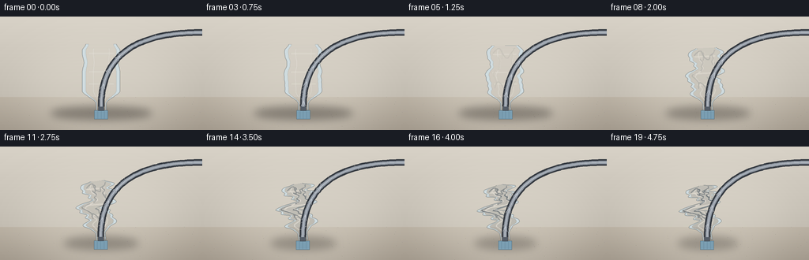
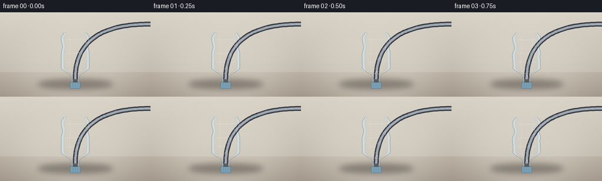

CODING AGENTS AS PIXEL WORLD MODELS
traex/Seed-2.1-Pro-0915 · phygen_016
点击播放 · 原生 RGB 像素
逐轮保存的候选
回放视频、检查图与代码变化。
每份候选均可单独播放。实际图片检查记录在下方工具轨迹中。
候选 01播放与检查图
点击播放 · 原生 RGB 像素


展开代码变化
--- 上一保存版本
+++ 本次保存版本
@@ -0,0 +1,310 @@
+"""Timelapse: air extracted from a sealed thin plastic bottle.
+
+Procedural renderer (numpy + PIL only). A PET bottle is built from a
+parametric half-width profile; per frame its walls are displaced by
+growing dent modes and localized buckle points, creases are shaded in,
+and a nozzle/hose at the mouth shows air being pulled out.
+"""
+import math
+
+import numpy as np
+from PIL import Image, ImageDraw, ImageFilter
+
+import artifact_io
+
+W, H, N, FPS = 256, 144, 20, 4.0
+S = 3 # supersampling factor
+SW, SH = W * S, H * S
+
+CX = 128 * S
+BASE_Y = 119 * S
+HEIGHT = 84 * S
+
+
+def smoothstep(x):
+ x = np.clip(x, 0.0, 1.0)
+ return x * x * (3 - 2 * x)
+
+
+# ---------------------------------------------------------------- background
+def make_background():
+ bg = Image.new("RGB", (SW, SH))
+ px = bg.load()
+ horizon = 102 * S
+ top = np.array([216, 210, 199])
+ wall = np.array([190, 184, 173])
+ t0 = np.array([181, 172, 158])
+ t1 = np.array([160, 151, 138])
+ for y in range(SH):
+ if y < horizon:
+ f = y / horizon
+ c = top * (1 - f) + wall * f
+ else:
+ f = (y - horizon) / (SH - horizon)
+ c = t0 * (1 - f) + t1 * f
+ for x in range(SW):
+ px[x, y] = tuple(int(v) for v in c)
+ # soft pool of light behind the bottle
+ glow = Image.new("L", (SW, SH), 0)
+ gd = ImageDraw.Draw(glow)
+ gd.ellipse([CX - 110 * S, 30 * S, CX + 110 * S, 150 * S], fill=70)
+ glow = glow.filter(ImageFilter.GaussianBlur(28 * S))
+ light = Image.new("RGB", (SW, SH), (255, 250, 238))
+ bg = Image.composite(light, bg, glow)
+ # faint tabletop specks (deterministic)
+ rng = np.random.default_rng(7)
+ d = ImageDraw.Draw(bg)
+ for _ in range(60):
+ x, y = int(rng.integers(0, SW)), int(rng.integers(horizon, SH))
+ shade = int(rng.integers(110, 160))
+ d.point((x, y), fill=(shade, shade - 6, shade - 16))
+ return bg
+
+
+BACKGROUND = make_background()
+
+
+# ------------------------------------------------------------- bottle geometry
+SS_GRID = np.linspace(0, 1, 140)
+
+
+def half_width(s):
+ """Half-width profile of the bottle, s: 0 mouth -> 1 base."""
+ s = np.asarray(s, dtype=float)
+ w = np.full_like(s, 6.5)
+ # shoulder
+ f = smoothstep((s - 0.10) / 0.20)
+ w = w * (1 - f) + 24.0 * f
+ # gentle molded waist near the lower third
+ waist = 2.4 * np.exp(-((s - 0.72) / 0.085) ** 2)
+ body = smoothstep((s - 0.10) / 0.20) * (1 - smoothstep((s - 0.90) / 0.10))
+ w = w - waist * body
+ # base tucks under slightly
+ b = smoothstep((s - 0.90) / 0.10)
+ w = w * (1 - b) + 19.5 * b
+ return w * S
+
+
+# fixed dent-mode phases (no per-frame randomness: one coherent crumple)
+MODES = [
+ (3.3, 0.4, 0.0, 1.7),
+ (5.9, 0.3, 2.1, 4.4),
+ (8.7, 0.22, 4.0, 0.8),
+ (12.1, 0.14, 1.1, 3.3),
+]
+LOCAL_DENTS = [(0.52, 0.060, -1.0, 0.2), (0.74, 0.075, 0.8, 2.4)]
+
+
+def collapse_amount(i):
+ t = i / (N - 1)
+ c = np.clip((t - 0.04) / 0.92, 0, 1)
+ return float(smoothstep(c) ** 0.92)
+
+
+def bottle_points(i):
+ """Returns (s, left_pts, right_pts, collapse, theta)."""
+ c = collapse_amount(i)
+ s = SS_GRID
+ t = i / (N - 1)
+ w = half_width(s)
+ bodyw = smoothstep((s - 0.14) / 0.20)
+
+ # overall width squeeze (neck/cap stays almost intact)
+ sx = 1 - 0.40 * c * (0.25 + 0.75 * bodyw)
+
+ # vertical compression, pinned at the base
+ v = 0.17 * c ** 1.15
+ y = BASE_Y - s * HEIGHT * (1 - v * s)
+
+ def dent(sigflip, phases):
+ dd = np.zeros_like(s)
+ for k, (freq, amp, phL, phR) in enumerate(MODES):
+ ph = phL if phases == 0 else phR
+ dd += amp * np.sin(2 * np.pi * freq * s + ph)
+ for center, width, dirn, ph in LOCAL_DENTS:
+ dd += dirn * np.exp(-((s - center) / width) ** 2) * (0.6 + 0.4 * math.sin(ph))
+ # early elastic flutter before plastic yields
+ flutter = 0.02 * math.sin(t * 16.0 + sigflip) * math.exp(-t * 2.2)
+ return (dd + flutter) * w * 0.62 * c * bodyw
+
+ dl = dent(0.0, 0) # positive -> rightward (inward for left wall)
+ dr = dent(2.3, 1) # negative -> leftward (inward for right wall)
+ lx = CX - w * sx + dl
+ rx = CX + w * sx + dr
+ # base gets a wavy, sucked-under edge late
+ base_curl = bodyw * smoothstep((s - 0.88) / 0.12)
+ lx += base_curl * 3.0 * S * c * np.sin(2 * np.pi * 9 * s)
+ rx += base_curl * 3.0 * S * c * np.sin(2 * np.pi * 9 * s + 1.3)
+
+ # whole bottle leans as it buckles
+ theta = -0.17 * c ** 1.35
+ ct, st = math.cos(theta), math.sin(theta)
+
+ def rot(x):
+ dx = x - CX
+ dy = y - BASE_Y
+ return CX + dx * ct - dy * st, BASE_Y + dx * st + dy * ct
+
+ lx2, ly2 = rot(lx)
+ rx2, ry2 = rot(rx)
+ return s, np.c_[lx2, ly2], np.c_[rx2, ry2], c, theta
+
+
+# ------------------------------------------------------------------- rendering
+def interp_point(s_grid, pts, sval):
+ return np.array([np.interp(sval, s_grid, pts[:, 0]),
+ np.interp(sval, s_grid, pts[:, 1])])
+
+
+def lerp_edge(s_grid, left, right, sval, frac):
+ p0 = interp_point(s_grid, left, sval)
+ p1 = interp_point(s_grid, right, sval)
+ return p0 * (1 - frac) + p1 * frac
+
+
+def render_frame(i):
+ s, left, right, c, theta = bottle_points(i)
+ frame = BACKGROUND.convert("RGBA")
+
+ # ground shadow
+ shadow = Image.new("RGBA", (SW, SH), (0, 0, 0, 0))
+ sd = ImageDraw.Draw(shadow)
+ swid = (64 - 26 * c) * S
+ sd.ellipse([CX - swid, BASE_Y - 5 * S, CX + swid, BASE_Y + 12 * S],
+ fill=(30, 26, 22, int(95 - 30 * c)))
+ shadow = shadow.filter(ImageFilter.GaussianBlur(5 * S))
+ frame.alpha_composite(shadow.convert("RGBA"))
+
+ layer = Image.new("RGBA", (SW, SH), (0, 0, 0, 0))
+ d = ImageDraw.Draw(layer)
+
+ poly = [tuple(p) for p in left] + [tuple(p) for p in right[::-1]]
+ # body fill: thin translucent PET, slightly milky blue
+ d.polygon(poly, fill=(206, 224, 232, 196))
+
+ # interior gets denser/darker as walls fold over themselves
+ inner = [tuple(lerp_edge(s, left, right, sv, 0.10)) for sv in s]
+ inner += [tuple(lerp_edge(s, left, right, sv, 0.90)) for sv in s[::-1]]
+ d.polygon(inner, fill=(46, 66, 80, int(34 * c)))
+
+ # molded panel grooves (subtle horizontal bands)
+ for gv in (0.40, 0.58, 0.86):
+ pts = [tuple(lerp_edge(s, left, right, sv, 0.16))
+ for sv in np.linspace(gv - 0.012, gv + 0.012, 10)]
+ pts += [tuple(lerp_edge(s, left, right, sv, 0.84))
+ for sv in np.linspace(gv + 0.012, gv - 0.012, 10)]
+ d.polygon(pts, fill=(255, 255, 255, 26))
+ d.line(pts[:10], fill=(70, 92, 106, 30), width=max(1, S // 2))
+
+ # vertical specular streaks that follow the deforming walls
+ for frac, a in ((0.30, 46), (0.72, 30)):
+ pts = []
+ for sv in np.linspace(0.16, 0.94, 80):
+ pts.append(tuple(lerp_edge(s, left, right, sv, frac)))
+ d.line(pts, fill=(255, 255, 255, a), width=max(1, int(1.4 * S)))
+
+ # crumple creases
+ crease_defs = [
+ (0.50, 0.24, 0.22, 0.5), (0.62, 0.78, 0.26, 2.1),
+ (0.72, 0.30, 0.20, 3.3), (0.80, 0.70, 0.18, 1.2),
+ (0.44, 0.66, 0.16, 4.4), (0.86, 0.42, 0.14, 0.7),
+ ]
+ for sc, fc, ds_, ph in crease_defs:
+ a = int(150 * c * min(1.0, 0.25 + c))
+ if a < 8:
+ continue
+ pts_d, pts_l = [], []
+ for sv in np.linspace(sc - ds_ / 2, sc + ds_ / 2, 12):
+ wob = 0.10 * math.sin(sv * 30 + ph) * c
+ p = lerp_edge(s, left, right, sv, fc + wob)
+ pts_d.append(tuple(p))
+ pts_l.append(tuple(p + np.array([1.4 * S, -1.0 * S])))
+ d.line(pts_d, fill=(44, 60, 74, a), width=max(1, int(1.6 * S)))
+ d.line(pts_l, fill=(255, 255, 255, int(a * 0.45)), width=max(1, S // 2))
+
+ # accordion folds at shoulder and lower body
+ for sc, span in ((0.34, 0.10), (0.88, 0.08)):
+ a = int(120 * c)
+ if a < 8:
+ continue
+ pts = [tuple(lerp_edge(s, left, right, sc + span * math.sin(8 * f),
+ 0.18 + 0.64 * f))
+ for f in np.linspace(0, 1, 14)]
+ d.line(pts, fill=(44, 60, 74, a), width=max(1, int(1.5 * S)))
+
+ # rim outlines
+ d.line([tuple(p) for p in left], fill=(72, 92, 106, 210), width=max(1, S // 2))
+ d.line([tuple(p) for p in right], fill=(72, 92, 106, 210), width=max(1, S // 2))
+ d.line([tuple(left[0]), tuple(right[0])], fill=(72, 92, 106, 210), width=max(1, S // 2))
+
+ layer = layer.filter(ImageFilter.GaussianBlur(0.6))
+ frame.alpha_composite(layer)
+
+ d = ImageDraw.Draw(frame)
+
+ # ---- cap + nozzle, riding the tilting neck ----
+ neck = interp_point(s, right, 0.06)
+ neck_l = interp_point(s, left, 0.06)
+ ncx = float((neck[0] + neck_l[0]) / 2)
+ ntop = float(interp_point(s, left, 0.0)[1])
+ cw, ch = 17 * S, 11 * S
+ cap = [
+ (ncx - cw / 2, ntop), (ncx + cw / 2, ntop),
+ (ncx + cw / 2, ntop + ch), (ncx - cw / 2, ntop + ch),
+ ]
+ d.polygon(cap, fill=(122, 158, 178, 255), outline=(70, 96, 112))
+ for k in range(1, 4):
+ xx = ncx - cw / 2 + cw * k / 4
+ d.line([(xx, ntop + 2), (xx, ntop + ch - 2)], fill=(96, 130, 150), width=max(1, S // 3))
+ # nozzle nub
+ nw, nh = 7 * S, 5 * S
+ d.rectangle([ncx - nw / 2, ntop - nh, ncx + nw / 2, ntop + 1],
+ fill=(84, 92, 102), outline=(52, 58, 66))
+
+ # ---- extraction hose: up from nozzle, then out to the right ----
+ p0 = np.array([ncx, ntop - nh])
+ p1 = np.array([ncx, 20 * S])
+ p2 = np.array([ncx + 95 * S, 20 * S])
+ p3 = np.array([SW + 30, 20 * S])
+
+ def bez(uu):
+ u = 1 - uu
+ return (u ** 3 * p0 + 3 * u ** 2 * uu * p1 + 3 * u * uu ** 2 * p2 + uu ** 3 * p3)
+
+ def tangent(uu):
+ u = 1 - uu
+ v = (3 * u ** 2 * (p1 - p0) + 6 * u * uu * (p2 - p1) + 3 * uu ** 2 * (p3 - p2))
+ return v / np.linalg.norm(v)
+
+ curve = [tuple(bez(u)) for u in np.linspace(0, 1, 60)]
+ d.line(curve, fill=(52, 57, 64), width=int(8.5 * S))
+ d.line(curve, fill=(146, 154, 164), width=int(4.5 * S))
+ d.line(curve, fill=(186, 192, 200), width=max(1, int(1.2 * S)))
+
+ # air being forced into the nozzle: chevrons travelling down the hose
+ pulse = math.exp(-1.8 * c) * 0.55 + 0.25
+ for k in range(3):
+ uu = 0.30 - ((i / (N - 1)) * 0.55 + k * 0.10) % 0.30
+ if uu <= 0:
+ continue
+ pos = bez(uu)
+ tan = tangent(uu)
+ perp = np.array([-tan[1], tan[0]])
+ a = int(200 * pulse * math.sin(math.pi * uu / 0.30))
+ size = 3.2 * S
+ tip = pos + tan * size
+ for side in (-1, 1):
+ d.line([tuple(tip), tuple(pos + perp * side * size * 0.9 - tan * size)],
+ fill=(235, 240, 246, max(0, a)), width=max(1, S // 2))
+
+ out = frame.convert("RGB").resize((W, H), Image.LANCZOS)
+ return np.asarray(out, dtype=np.uint8)
+
+
+def main():
+ frames = [render_frame(i) for i in range(N)]
+ artifact_io.save(frames, ".")
+
+
+if __name__ == "__main__":
+ main()
可观测工具轨迹
实际执行的命令与返回图片。
命令 1exit 0
/bin/bash -lc 'ls -la && cat prompt.txt && cat GENERATION_RULES.md && cat task_spec.json'
命令 2exit 0
/bin/bash -lc 'cat artifact_io.py && cat player_template.html'
命令 3exit 1
/bin/bash -lc 'cd . && time python generate.py && ls -la'
命令 4exit 1
/bin/bash -lc 'cd . && time python generate.py && ls -la frames | head'
命令 5exit 0
/bin/bash -lc 'cd . && time python generate.py && ls -la && ls frames | head -25'
命令 6exit 0
/bin/bash -lc "cd . && python - <<'EOF'
import numpy as np
from PIL import Image
def ascii_preview(arr, cols=64, rows=30):
# silhouette: pixels that are \"bottle-ish\" (light blue plastic / dark creases over bg)
h, w, _ = arr.shape
gray = arr.mean(2)
# detect bottle region by difference from background hue: plastic is bluer
r,g,b = arr[...,0].astype(int), arr[...,1].astype(int), arr[...,2].astype(int)
mask = ((b - r) > 4) | (gray < 120)
# also cap/hose dark
chars = \" .:-=+*#%@\"
out=[]
for ry in range(rows):
y0,y1 = ry*h//rows,(ry+1)*h//rows
line=\"\"
for rx in range(cols):
x0,x1 = rx*w//cols,(rx+1)*w//cols
v = mask[y0:y1,x0:x1].mean()
line += chars[min(9,int(v*10))]
out.append(line)
return \"\\n\".join(out)
for fi in (0,5,10,15,19):
im = np.array(Image.open(f\"frames/{fi:02d}.png\"))
print(f\"--- frame {fi} ---\")
print(ascii_preview(im))
EOF"保存候选 1 份；完成命令 6 次；可验证图片返回 0 张。原始 API 响应与完整日志保留在本地。